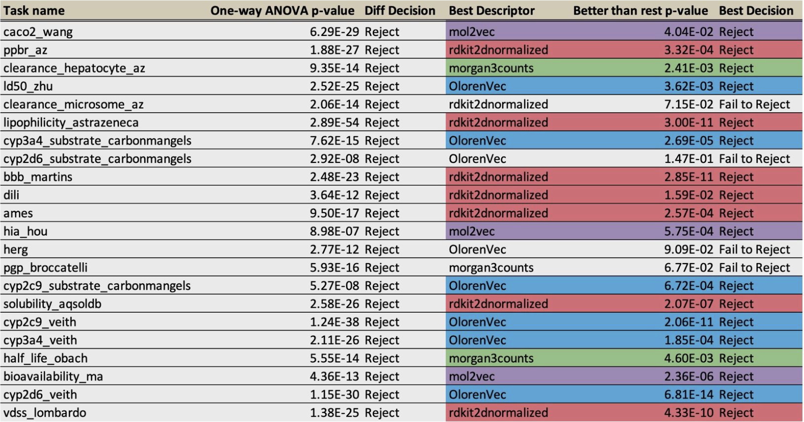

Which molecular vector representation should we use?
There is an abundance of options but a lack of clarity when it comes to selecting a
molecular vector representation. A fixed-length vector representation is extremely useful
for building machine learning models, visualizations, and even generative models.
TA fixed-length vector representation is critical when dealing with small sample sizes,
where high-dimensional SMILES, SELFIES, molecular graphs, or conformations would not
be successful. Large sample sizes may allow the use of high-dimensional data, but with
most problems in drug discovery, small sample sizes necessitate low-dimensional data.
We’ll be testing two popular representations from the Descriptastorus library:
rdkit2dnormalized and morgan3counts. These are wrappers of RDKit’s descriptors which
are normalized to appropriate ranges. We’ll be testing two artificial intelligence (AI)
representations, mol2vec, an unsupervised approach, and OlorenVec, our own
proprietary semi-supervised contrastive learning approach.
Our testing methodology
We are using the ADMET benchmark tasks provided in the Therapeutic Data Commons.
There are 22 tasks in total and with each of our four representations we will be training a
Random Forest model (100 estimators) and evaluating them on five splits for each task.
We first use a one-way ANOVA to see if the choice of molecular vector representation
has a significant effect on benchmark metrics. Then we use a multi-way t-test to see if
the best molecular vector representation performs better than all other evaluated
molecular vector representations.
The results!
The below table summarizes the results.

Out of 22 tasks, all had a significant difference in the performance of different
representations. Only 18 tasks had a molecular vector representation which statistically
significantly performed better than all other representations. OlorenVec was the superior
representation for 6 tasks; mol2vec was the superior representation for 3 tasks;
rdkit2dnormalized was the superior representation for 7 tasks; morgan3counts was the
superior representation for 2 tasks.
So, what does this mean?
This sounds cliché, but each representation is unique and has unique strengths. Of
course, if you need a good general purpose molecular vector representation you should
use OlorenVec or a set of cheminformatics descriptors.
But, if you want to push your modelling power to its limits, you’ll want to explore all
these options. The choice of molecular vector representation is a hyperparameter, like
any other. While other software packages may obscure this choice, Oloren doesn’t. We
put the power for you to choose and explore a whole range of molecular vector
representations—implementing our own proprietary methodologies as well as wrapping
popular open-source molecular vector representations—into your own hands, into you a
powerful interoperable framework. That’s the power of the library we’ve developed—
Oloren AutoML.